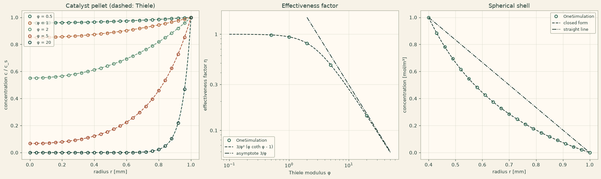

Docs › Examples › Spherically symmetric diffusion and reaction
Mass transport · 1D
Spherically symmetric diffusion and reaction
A reacting catalyst pellet and a spherical capsule wall, both computed in the radius alone thanks to spherical symmetry.
Run locally with OneSimulation. The example downloads are free. Running them requires an activated runtime. OneSimulation 1.0 · CPython 3.13 on macOS (Apple Silicon), Ubuntu 22.04 (x86-64), and Windows x64. Installation and activation · View pilot plans. Scope of the reference checks.


What it computes
OneSimulation solves the species balance with the SpeciesTransport model on a radial line with the spherical radial space (quadratic elements integrated with 4 pi r^2 dr); the symmetry condition at the centre is built into the space.
What it checks
The effectiveness factor matches 3/phi^2 (phi coth phi - 1) within 6e-10 at phi = 2 and 3e-5 at phi = 20 on 40 elements, the profiles the Thiele solution within 7e-4, and the shell flux the closed-form law within 6e-7.
The notebook
The complete notebook, cell by cell. Run it to produce the figures and the comparison printout.
With spherical symmetry the species balance with a first-order reaction reduces to an equation in the radius alone,
Two classical problems use it. A porous catalyst pellet of radius \(a\) is surrounded by fluid at the concentration \(c_s\); the reactant diffuses in and is consumed. A spherical shell between \(r_1\) and \(r_2\) (a hollow microcapsule wall, \(k=0\)) separates an inner concentration \(c_1\) from an outer one \(c_2\) and passes a steady flux.
OneSimulation solves both with the SpeciesTransport model on a radial line, using the spherical radial space (quadratic elements integrated with \(4\pi r^2\,dr\)): the pellet line starts at the centre, where the symmetry condition is built into the space, the shell line starts at \(r_1\).
| Problem | Boundaries |
|---|---|
| pellet | \(r=a\): \(c=c_s\); centre: symmetry |
| shell | \(r=r_1\): \(c=c_1\); \(r=r_2\): \(c=c_2\) |
Reference. R. Aris, The Mathematical Theory of Diffusion and Reaction in Permeable Catalysts, Oxford 1975; J. Crank, The Mathematics of Diffusion, 2nd ed., Oxford 1975, §6.2. For the pellet, with the Thiele modulus \(\phi=a\sqrt{k/D}\),
where the effectiveness factor \(\eta\) is the uptake through the surface divided by the rate of a pellet at \(c_s\) throughout, \(\tfrac43\pi a^3kc_s\). For the shell
import numpy as np
from onesim.cad.d1 import Line
from onesim.meshing import StructuredLineMesher
from onesim.numerics import Numerics
from onesim.numerics.fem import FiniteElement, Lagrange, SphericalLineH1SpaceFactory
from onesim.numerics.linear import SparseDirect
from onesim.physics.chemistry import (
FixedConcentration,
SpeciesTransport,
TransportSpecies,
)
from onesim.simulation import Problem, Simulation
from onesim.visualization import plots, theme
theme.set()Catalyst pellet
A pellet of 2 mm diameter, effective diffusivity \(10^{-9}\) m²/s, surface concentration 1 mol/m³, Thiele moduli from 0.5 to 20, on 10, 20 and 40 quadratic elements.
radius, diffusivity, surface = 1e-3, 1e-9, 1.0
pellet_line = Line(start=(0.0, 0.0, 0.0), end=(radius, 0.0, 0.0))
spatial = Numerics(
spatial=FiniteElement(
element=Lagrange(order=2), provider=SphericalLineH1SpaceFactory()
),
linear_solver=SparseDirect(),
)
moduli = (0.5, 1.0, 2.0, 5.0, 20.0)
pellets = {
(phi, cells): Simulation(
problem=Problem(
name="Reacting pellet",
geometry=pellet_line,
physics=(
(
model := SpeciesTransport(
domain=pellet_line.line,
species=(
TransportSpecies(
"A",
diffusivity=diffusivity,
decay_rate=diffusivity * (phi / radius) ** 2,
),
),
)
),
),
boundary_conditions=(
FixedConcentration(
physics=model, boundary=pellet_line.boundaries.end, value=surface
),
),
),
mesh=StructuredLineMesher(cells=cells).generate(pellet_line),
numerics=spatial,
)
.solve_stationary()
.field(model.field("A"))
for phi in moduli
for cells in (10, 20, 40)
}Spherical shell
A capsule wall from \(r_1=0.4\) mm to \(r_2=1\) mm, inner concentration 1 mol/m³, outer 0.
inner, outer, c_inner, c_outer = 0.4e-3, 1.0e-3, 1.0, 0.0
shell_line = Line(start=(inner, 0.0, 0.0), end=(outer, 0.0, 0.0))
wall = SpeciesTransport(
domain=shell_line.line, species=(TransportSpecies("A", diffusivity=diffusivity),)
)
shell = (
Simulation(
problem=Problem(
name="Spherical shell",
geometry=shell_line,
physics=(wall,),
boundary_conditions=(
FixedConcentration(
physics=wall, boundary=shell_line.boundaries.start, value=c_inner
),
FixedConcentration(
physics=wall, boundary=shell_line.boundaries.end, value=c_outer
),
),
),
mesh=StructuredLineMesher(cells=20).generate(shell_line),
numerics=spatial,
)
.solve_stationary()
.field(wall.field("A"))
)Comparison with the closed-form solutions
The effectiveness factor from the surface flux and the largest deviation of the profile on a fine radial line.
r = np.linspace(1e-7, radius, 201)
points = np.column_stack((r, 0 * r, 0 * r))
thiele = lambda phi, r: radius * np.sinh(phi * r / radius) / (r * np.sinh(phi))
rate = (
lambda phi: 4 / 3 * np.pi * radius**3 * diffusivity * (phi / radius) ** 2 * surface
)
print(
" phi elements effectiveness computed 3/phi² (phi coth phi - 1) deviation largest profile deviation"
)
for (phi, cells), field in pellets.items():
eta = -field.boundary_flux(pellet_line.boundaries.end) / rate(phi)
exact = 3 / phi**2 * (phi / np.tanh(phi) - 1)
print(
f"{phi:5.1f} {cells:9d} {eta:22.8f} {exact:25.8f} {eta / exact - 1:+11.1e} "
f"{np.abs(np.asarray(field.evaluate(points)).reshape(-1) - thiele(phi, r)).max():20.1e}"
)
print(
f"reaction in the pellet equals the uptake: φ = 2, ∫k c dV / surface flux = "
f"{diffusivity * (2.0 / radius) ** 2 * pellets[(2.0, 40)].integrate().value / -pellets[(2.0, 40)].boundary_flux(pellet_line.boundaries.end):.10f}"
)
rs = np.linspace(inner, outer, 121)
flow = 4 * np.pi * diffusivity * (c_inner - c_outer) * inner * outer / (outer - inner)
profile = c_inner + (c_outer - c_inner) * (1 / inner - 1 / rs) / (1 / inner - 1 / outer)
print(
f"shell: flux {shell.boundary_flux(shell_line.boundaries.end):.6e} mol/s out, {-shell.boundary_flux(shell_line.boundaries.start):.6e} in, "
f"closed form {flow:.6e} mol/s; largest profile deviation "
f"{np.abs(np.asarray(shell.evaluate(np.column_stack((rs, 0 * rs, 0 * rs)))).reshape(-1) - profile).max():.1e}"
)Figure
The pellet profiles for the five Thiele moduli, the effectiveness factor over the Thiele modulus with its asymptote \(3/\phi\), and the shell profile, which is not linear in \(r\) but in \(1/r\).
fine = np.geomspace(0.1, 50.0, 200)
fig = plots.figure(1, 3, size=(17, 5))
plots.line(
points={
f"φ = {phi:g}": (
1e3 * r[::8],
np.asarray(pellets[(phi, 40)].evaluate(points[::8])).reshape(-1),
)
for phi in moduli
},
reference={f"φ = {phi:g}": (1e3 * r, thiele(phi, r)) for phi in moduli},
xlabel="radius r [mm]",
ylabel="concentration c / c_s",
title="Catalyst pellet (dashed: Thiele)",
legend="upper left",
ax=fig[0],
)
plots.line(
points={
"OneSimulation": (
np.array(moduli),
np.array(
[
-pellets[(phi, 40)].boundary_flux(pellet_line.boundaries.end)
/ rate(phi)
for phi in moduli
]
),
)
},
reference={
"3/φ² (φ coth φ - 1)": (fine, 3 / fine**2 * (fine / np.tanh(fine) - 1)),
"asymptote 3/φ": (fine[fine > 2], 3 / fine[fine > 2]),
},
scale="loglog",
xlabel="Thiele modulus φ",
ylabel="effectiveness factor η",
title="Effectiveness factor",
legend="lower left",
ax=fig[1],
)
plots.line(
points={
"OneSimulation": (
1e3 * rs[::6],
np.asarray(
shell.evaluate(np.column_stack((rs[::6], 0 * rs[::6], 0 * rs[::6])))
).reshape(-1),
)
},
reference={
"closed form": (1e3 * rs, profile),
"straight line": (
1e3 * rs,
c_inner + (c_outer - c_inner) * (rs - inner) / (outer - inner),
),
},
xlabel="radius r [mm]",
ylabel="concentration [mol/m³]",
title="Spherical shell",
legend="upper right",
ax=fig[2],
)
plots.show()Going further
Replace the fixed surface concentration of the pellet by a MassTransferFlux with a film coefficient: the overall effectiveness then contains the external resistance through the Biot number. Switch the radial space to RevolvedLineH1SpaceFactory for a long cylindrical pellet, whose effectiveness factor is \(2I_1(\phi)/(\phi I_0(\phi))\), or add a second species with a reversible reaction to see the equilibrium limit inside the pellet.